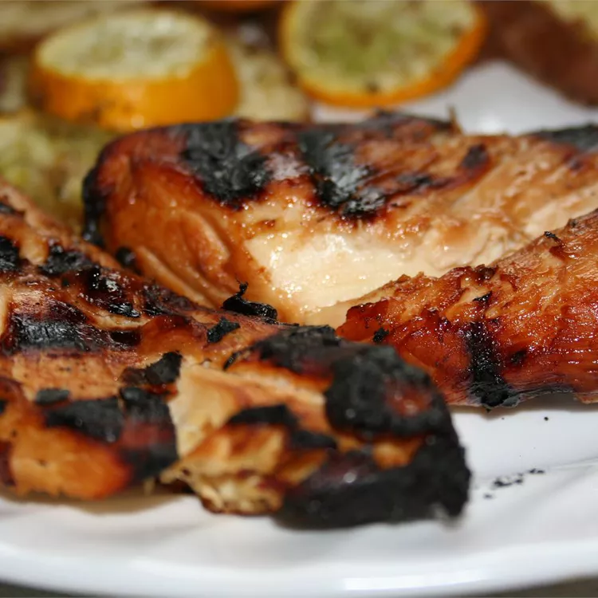

Chicken Teryaki

Description
A flavorful, tender grilled teryaki recipe that Uncle Kevin makes! Who's Uncle Kevin, you ask? Don't worry about him, just worry about the chicken.
Only a day of pre-prep followed by a reasonable cook time, this chicken bawks at the competition.
Ingredients
- 1.5 cups of pineapple juice
- 0.5 cup of soy sauce
- 1 teaspoon of ground ginger
- 0.5 teaspoon of garlic powder
- 0.25 teaspoon of white pepper
- 4 six ounce skinless, boneless chicken breast halves
Directions
- In a large bowl, mix together the pineapple juice, soy sauce, ginger, garlic powder, and white pepper.
Reserve a small amount of the marinade separately for dipping later; You know Aunt Marge is going to dunk hers in it like a heathen.
- Place chicken in marinade, and add enough water to cover. Cover, and refrigerate for 24 hours.
- Heat an outdoor grill for medium-high heat. Or an indoor electric grill. Just make sure you use it outside - Assert your grilling dominance over your neighbors.
- Brush grate lightly with oil. Grill chicken 5 to 7 minutes per side, depending on thickness. Chicken is done when inside is no longer pink and juices run clear.